Weak visual hierarchy
Dense layouts and long-form content made it harder to quickly understand where to go or what to do next.
Responsive Web Design / UX/UI
A desktop and mobile concept for discovering walks, comparing routes, and exploring places along the Lynn Valley Link Trail.
I designed this individual project for IXD 107, Responsive Web Design at Capilano University. My focus was the relationship between the homepage, trail guide, and map, and how that structure changes on a smaller screen.
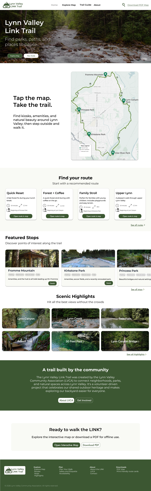
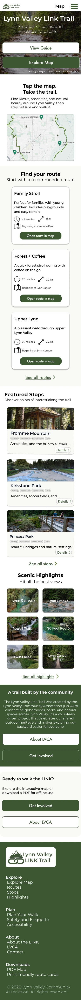
The original experience
The original site communicated useful information, but its blog-like structure made route discovery feel buried and harder to scan. The redesign focused on helping users make quicker decisions and feel more motivated to explore Lynn Valley both digitally and physically.
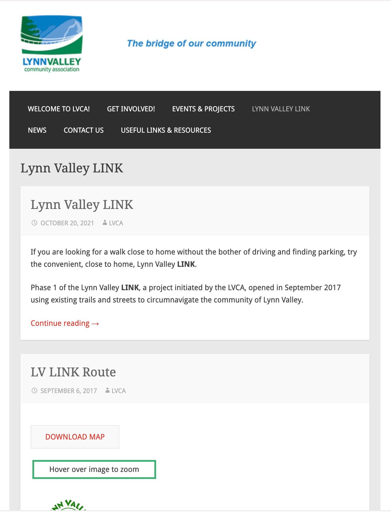
Dense layouts and long-form content made it harder to quickly understand where to go or what to do next.
The original experience did not support fast comparison between options, which reduced its usefulness for casual planners.
The presentation felt more archival than inviting, which worked against the goal of motivating exploration.
Transformation
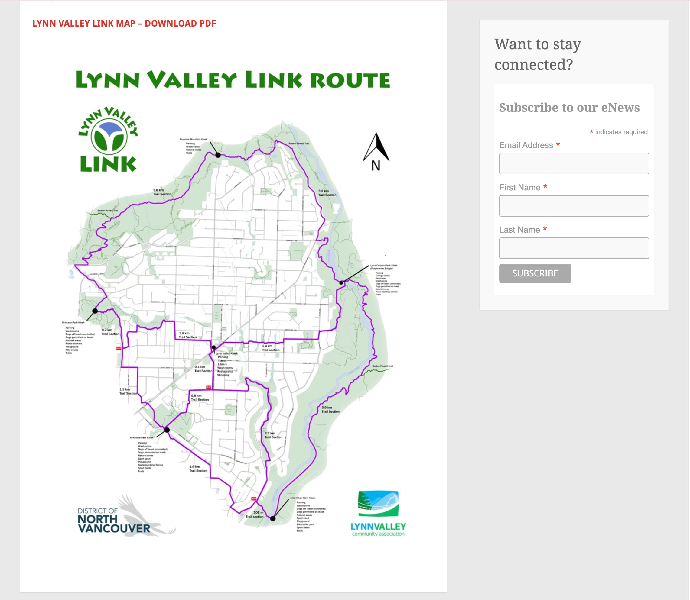
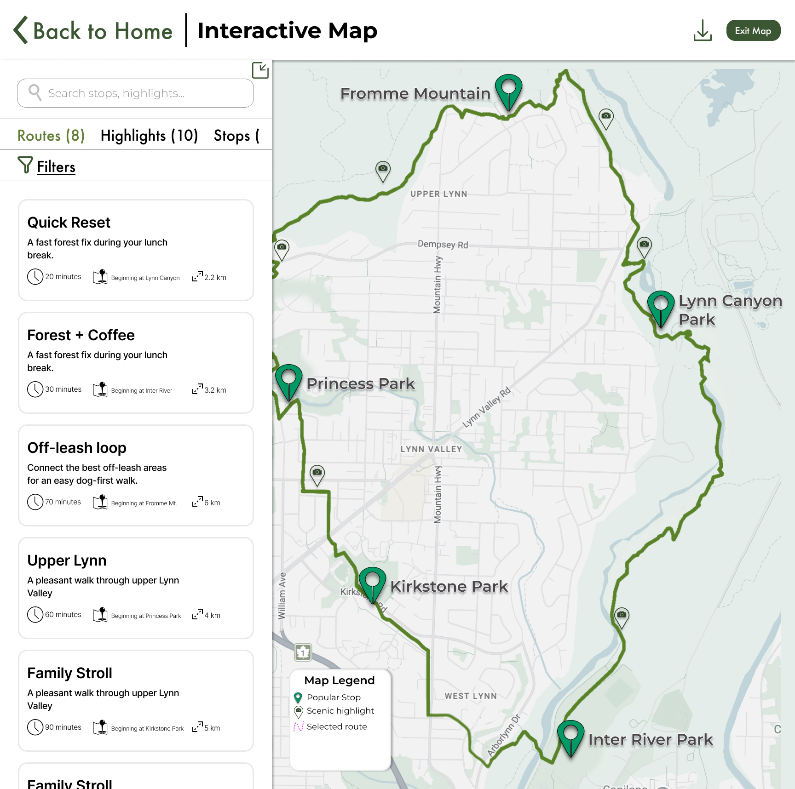
Final responsive screens
Home introduces route choices, the Trail Guide brings places together, and About gives the trail its community context. These are the original desktop compositions, shown at their full proportions.
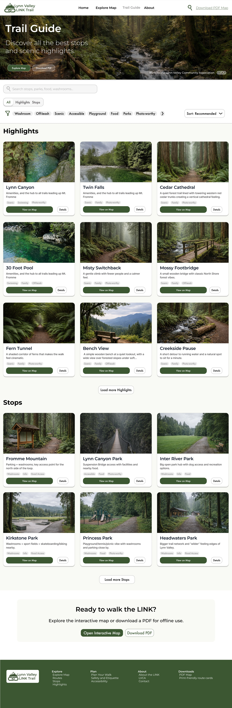
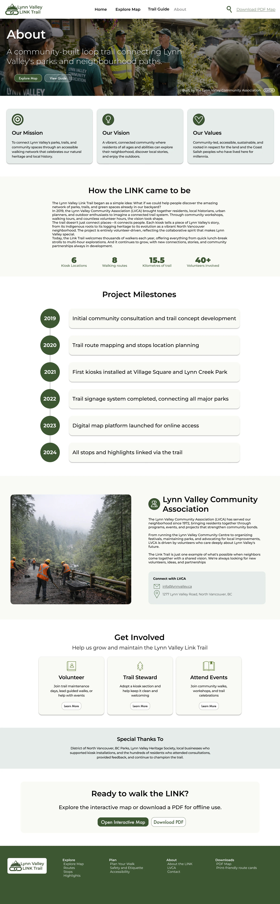
Original concept content includes illustrative route details and unverified community copy. Select a screen to view the full image.
Time, distance, and starting point stay together in each card. The mobile layout gives each route its own row.
View full mobile HomeSearch and filters sit above the results. Each place combines an image, a short description, and a map action.
View full mobile GuideProcess
I explored the page structure in Figma using simple image placeholders, text blocks, and repeated cards. These saved wireframe exports show the page regions and the shift from desktop columns to a mobile stack.
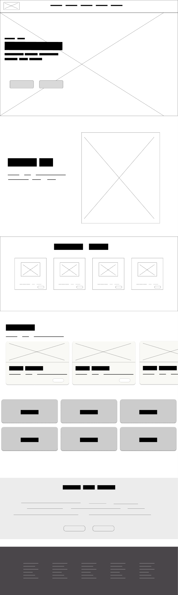
A broad introduction leads into the map and repeated route cards.
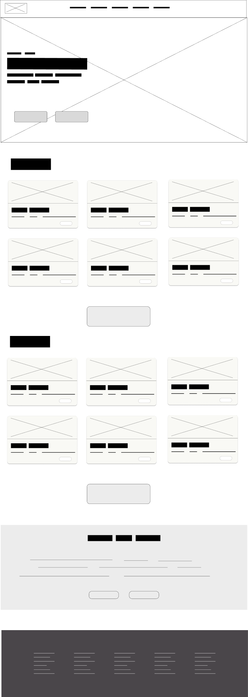
Repeated image and text regions establish the card grid.
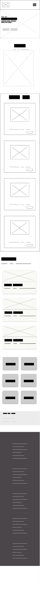
Content moves into a single reading sequence on the narrower screen.
Visual system
My original Figma boards document Montserrat, a forest-green palette, and colour-pair contrast checks. The values below come from those boards and their text layers.
MontserratAa Bb Cc / 012345
| Role | Weight | Size |
|---|---|---|
| H1 | Semibold | 76 |
| H2 | Semibold | 64 |
| H3 | Semibold | 48 |
| H4 | Light | 48 |
| H5 | Medium | 36 |
| Paragraph | Semibold* | 32 |
| Subtext | Medium | 20 |
MontserratAa Bb Cc / 012345
| Role | Weight | Size |
|---|---|---|
| H1 | Semibold | 32 |
| H2 | Semibold | 24 |
| H3 | Semibold | 20 |
| Subheader | Light | 20 |
| Paragraph | Semibold* | 16 |
*The paragraph specimens use semibold, although their labels specify regular on desktop and medium on mobile. The boards record the intended system; the final screens also contain Futura and Inter.
#3B5633#E4EDE9#F9F9F5#FFFFFF#929090#000000Ratios recalculated from the documented hex colours. WCAG AA requires 4.5:1 for normal text. The grey labels need revision; these palette checks do not establish full interface accessibility.
Key design decisions
The homepage prioritized route choice and highlights rather than long explanation, helping users decide where to start faster.
Route options were treated as the primary content pattern so users could compare choices at a glance.
The information hierarchy was designed to translate cleanly from desktop to mobile without losing usability.
Outcome
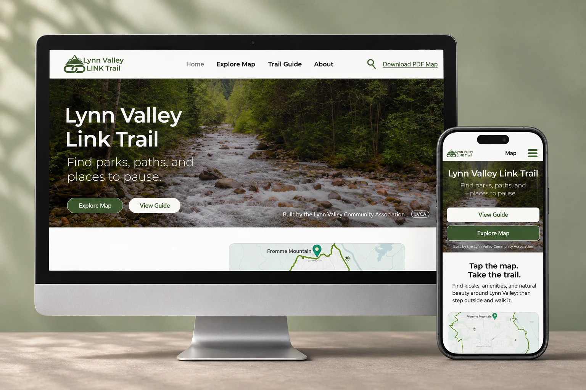
I brought route comparison, place discovery, and community information into a connected set of desktop and mobile layouts. The project demonstrates my approach to hierarchy and responsive composition. Usability testing and a working route-selection flow remain next steps.